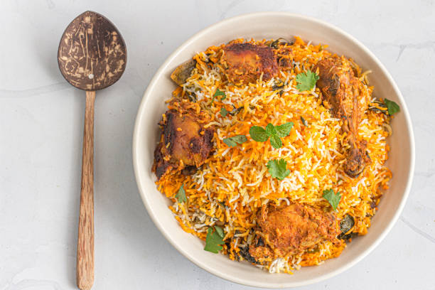

Biryani

Biryani is a mixed rice dish originating among the Muslims of the Indian subcontinent. It is made with Indian spices, rice, and usually some type of meat or in some cases without any meat, and sometimes, in addition, eggs and potatoes.Biryani is one of the most popular dishes in South Asia, as well as among the diaspora from the region. Similar dishes are also prepared in other parts of the world such as in Iraq, Thailand, and Malaysia.Biryani is the single most-ordered dish on Indian online food ordering and delivery services.
Click The Home Icon To Back The HomePage